PA 6: Merge Conflicts
Using GitHub
In this practice activity, you will be working in groups to create a new GitHub repository. You will practice pushing, pulling, and resolving conflicts as a team.
This activity will only work if you follow the directions in the exact order that I have specified them. Do not work ahead of your group members!
Get into Groups!
Form groups of four people. Designate each person one of the suits:
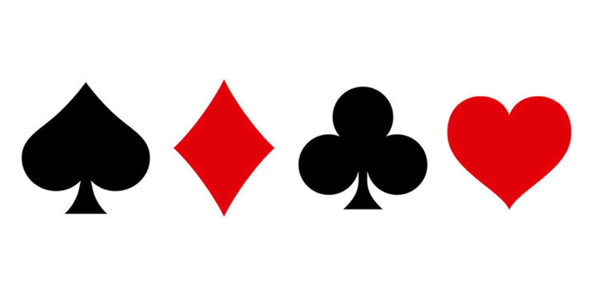
As you work through the activity, you will complete the steps assigned to your suit. Make sure you complete the steps in order and only complete the steps assigned to you!
If you only have 3 group members here, assign one person both and .
Repository Setup
1. Create a Repo on GitHub.
- Create a new Github repo:
Repositories>New.- Name the repo
stat331-PA6. - You can choose to make it Public or Private.
- Select
.gitignore template: R.
- Name the repo
- After creating the repo, go to
Settings>Collaborators>Add people.- Add your group members using their username or email.
2. Access the Remote Repo.
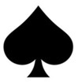
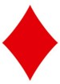
- Accept the repo invite in your email –
View invite>Accept invite. - Open the repo on GitHub.
3. Clone the Remote Repo Locally.
- In Rstudio:
File>New Project>Version Control>Git. - In GitHub: click
<> Codeand copy the HTTPS address. - In Rstudio: paste the address as the
Repository URL. Leave the directory name box blank. - Click
Browseand create this new project on your desktop.- Do not save this in your STAT 331 folder!!! We don’t want to embed an Rproj within another Rproj.
Create Project.
Collaborating in GitHub
4. Add Documents to the Repo.
- In RStudio, create a new Quarto file.
- If the Quarto file is totally blank (no default content), then add a single code chunk with
1 + 1. - Change the title to “Practice Activity 6”.
- Resist the urge to add authors.
- Save as
PA6.qmdin your newstat331-PA6folder on your desktop. - Add
embed-resources: trueto the YAML. - Keep the default template as is.
- Render the document.
- If the Quarto file is totally blank (no default content), then add a single code chunk with
- In RStudio, open and edit the
.gitignorefile to include*.Rprojand*.html.
Your directory stat331-PA6 should have the following files:
.gitignorePA6.qmdPA6.htmlstat331-PA6.Rproj
Your Git window, should only show the following files:
.gitignorePA6.qmd
If more than this shows up, then your .gitignore was not completed correctly! Git should be ignoring PA6.html and stat331-PA6.Rproj for tracking.
5. Push Documents to GitHub.
- Rstudio:
Gitpane.Stage(checkmark) the.gitignore>Commit✅ > add a commit message (“ignore all .Rproj files and .html files”) >Commit>Close.Stage(checkmark)PA6.qmd>Commit✅ > add a commit message (“create PA quarto file”) >Commit>Close.
- Rstudio:
Gitpane >Push(green arrow ⬆) the changes to the remote repo.
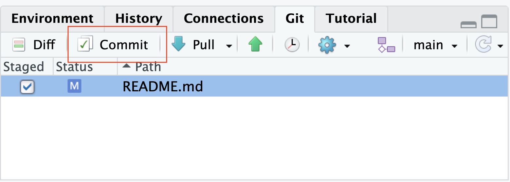
6. Pull Changes from GitHub.
- Rstudio:
Gitpane >Pull(teal arrow ⬇) the changes that were made!
Everyone should now have the .qmd and updated .gitignore files in their local repo!
- Look in your
Filespane to make sure.
7. Make a Change.
- Directly under the
title:line, addauthor:to the YAML and include everyone’s first names. - Render the document.
- Rstudio:
Gitpane >Stage(checkmark) files >Commit✅ > add commit message >Commit>Close.- Use a commit message like “add first names”.
- Rstudio:
Gitpane >Push⬆ the changes.
8. Forget to Pull.
Do NOT pull the changes that were made!
9. Make the Same Change.
- Directly under the
title:line, addauthor:to the YAML and include everyone’s first and last names. - Render the document.
- Rstudio:
Gitpane >Stage(checkmark) files >Commit✅ > add commit message >Commit>Close.- Use a commit message like “add first and last names”.
- Rstudio:
Gitpane >Push⬆ the changes.
You got an error! Ugh. We forgot to pull before we started making changes.
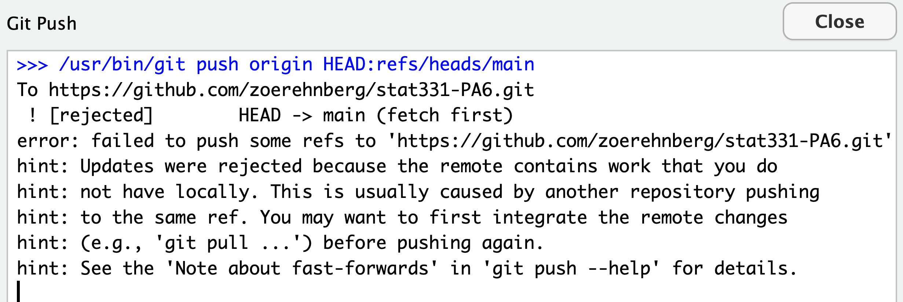
10. Resolve the Merge Conflict.
Rstudio: Git pane > Pull ⬇ the changes from the repo.
If your Git Pull window does NOT look like this…
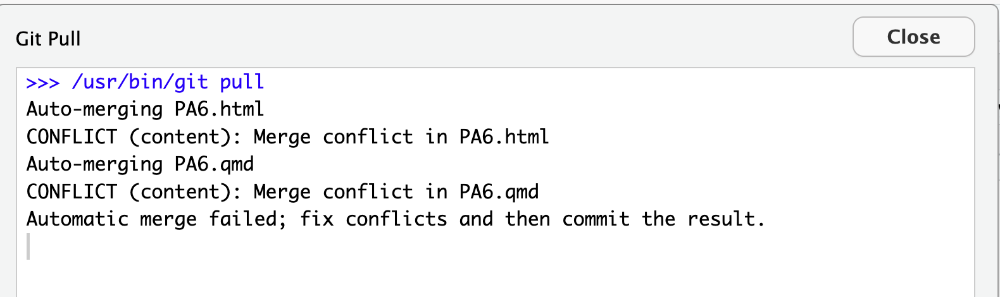
but maybe it looks like this:
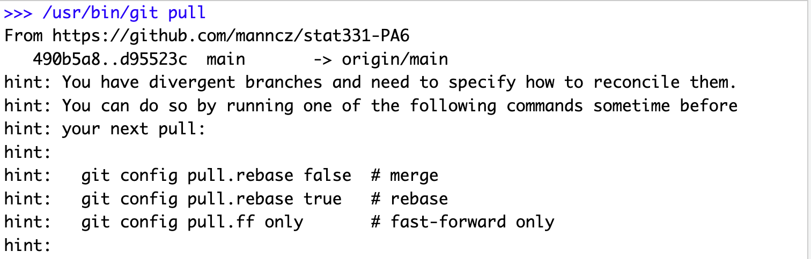
then…
- copy-paste the first command:
git config pull.rebase falseinto the Terminal pane (not the Console) in RStudio and hit Enter,
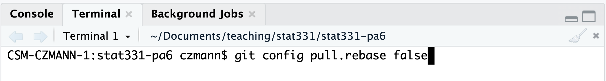
- and
Pull⬇ again.
After sucessfully starting the pull and getting the message about a merge conflict…
Your Quarto file should now look like this…
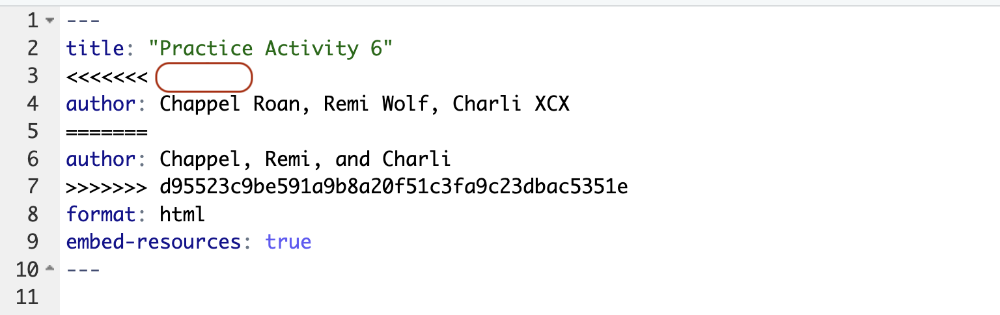
Note how the conflicting lines are marked! You might need to submit this to Canvas…
- Edit the
.qmdfile to resolve the conflict with your preferred change.- This means deleting all of the symbols marking the conflict and just leaving your preferred change.
- Render.
- Note that in the Rstudio Git window, your files will be marked with “U”s to indicate a merge conflict.
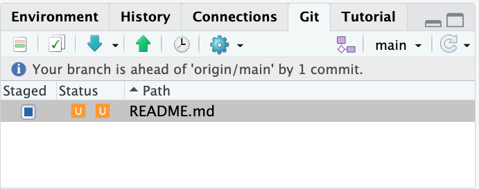
- ⚠️ the “Staged” box is also fully blue. This is a bit misleading – you still need to select the file to be staged to
Stageit – make sure there is a CHECK mark in the staged box! The orange Us will then go away. Commit✅ your changes with a good commit message.Push⬆ your changes to GitHub.
11. Forget to Pull.
Do NOT pull the changes that were made!
12. Make a Different Change.
- Edit the first code chunk to find the product of \(13 \times 13\).
- Render the document.
StageandCommit✅ your changes andPush⬆ your changes to GitHub.
You will get an error, read it and Pull ⬇ .
- No merge conflicts should occur – the changes were auto-merged!
- Your merge may have been made by a different strategy, but that’s okay.
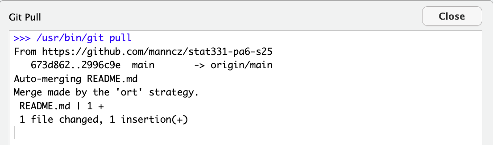
Push⬆ your changes again.
13. Forget to Pull.
Do NOT pull the changes that were made!
14. Make the Same Change (Again).
- Edit the first code chunk to find the product of \(11 \times 11\).
- Render the document.
StageandCommit✅ your changes andPush⬆ your changes to GitHub.
You will get an error. Ugh!!!! We forgot to pull again!
Pull⬇ the changes from GitHub.- Edit the
.qmdfile to resolve the conflict with the preferred change. StageandCommit✅ your changes andPush⬆ your changes to GitHub.
15. Final Document
Pull ⬇ the changes and look at your final document.
How does Git mark the start of lines with a merge conflict?
- Specifically, I want the four capital characters with which every conflict is marked.